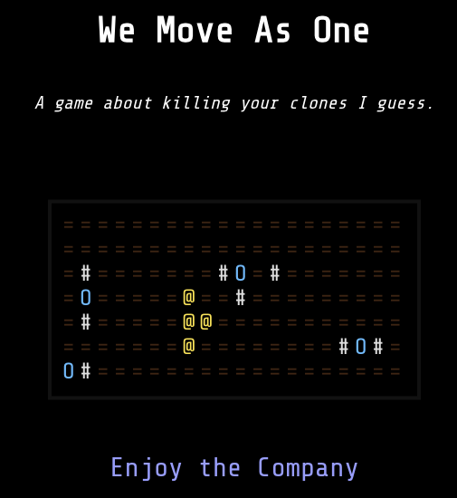
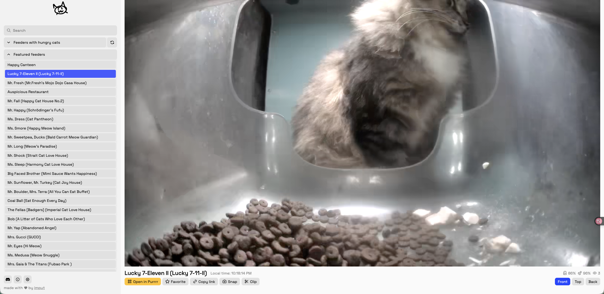
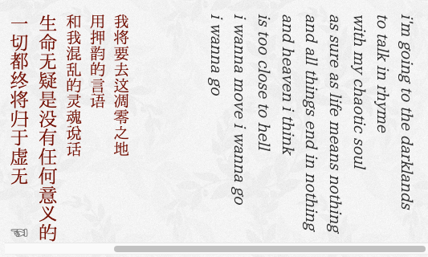
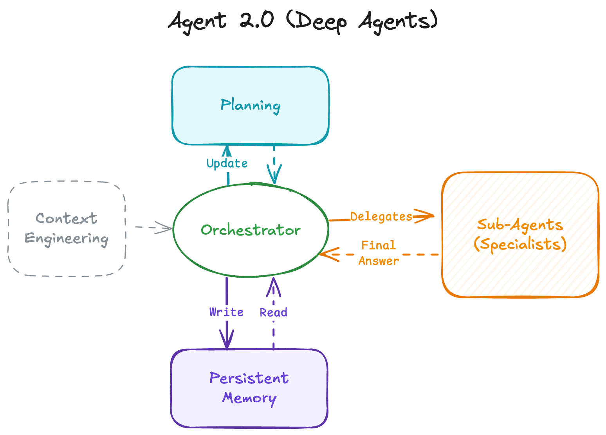

Zine#43
News | Article
How I, a non-developer, read the tutorial you, a developer, wrote for me, a beginner by annie
anine 写了一个教程，讽刺了一些面向初学者的教程 ⸺ 这些教程充斥着一堆初学者看不懂的术语，即使按照教程也很难跑通。
我也碰到过这样的教程，就会有种「字我都能看懂，但组合在一起我就看不懂」的感觉，让人摸不着头脑。
Just Let Me Select Text by Artyom Bologov
有的应用中的文字会故意做成不让你选择复制，可能是想防止内容被抓取，但实际上要抓取还是能绕过的，只是稍微麻烦点，为难了用户，但阻止不了别有用心的人。
禁止文本的选择，相当于把文本变成了图片，也失去了文本诸多便利，例如将其复制后翻译、搜索。
When I say “alphabetical order”, I mean “alphabetical order” by Sebastiano Tronto
按照字母顺序排序， file-9.txt 和 file-10.txt 哪个在前哪个在后？
揭晓答案
如果严格按照字母顺序排序， file- 这部分都是相同的，顺序取决于下一位， file-1 比 file-9 小，所以顺序是：
file-10.txtfile-9.txt
但是你会发现在很多程序里，顺序是：
file-9.txtfile-10.txt
因为这些程序觉得用户理解不了字母排序的含义，如果排序的某个部分是数字，它们会当作整体来排序，由于 9 小于 10，所以 file-9.txt 就排在了前面。
Write plain text files by Derek Sivers
Derek Sivers 建议用纯文本文件记录各种信息，文章例举了纯文本的各种好处。
可靠、灵活、便携、独立、持久。纯文本文件将能被未来几代人阅读，即使是数百年后。
我尤其喜欢它们离线、非商业性质的宁静。它们是安静的。它们是专注的。（正如我所追求的。）
Free Software hasn't won by Dorota
自由软件还未成功，用户自由只在软件的 四大自由 被维护时存在：
- 0: 为任何目的运行程序的自由，
- 1: 研究和修改它的自由，
- 2: 分享其副本的自由，
- 3: 改进它并分享改进。
为什么自由软件很重要？
[…]你看，心脏起搏器是一种复杂的设备，它必须持续、实时地检查和诊断病人，才能发挥其功能。它的任务是检测危险状况并相应地执行医疗程序。它需要软件来完成这项复杂的任务。但如果设备在诊断方面不够完美，那将是一个大问题。我不是医学专家，但心脏在不必要时受到电击听起来本身就很危险。当它运行不授予我们修改自由的封闭软件时，我们只能乞求制造商修复它。而当我们没有研究它的自由时，我们甚至无法避免导致它误触的情况！
但不要只听我的一面之词。我之所以知道这个问题，是因为凯伦·桑德勒，她从一开始就与自由软件的这个问题纠缠不清。
归根结底，如果人们别无选择，只能将自己的身体托付给一段闭源软件和一个单一制造商，我们又怎能说开源已经胜利了呢？
Open Social by dan abramov
文章阐述了开放社交 (Open Social) 的理念以及其背后的技术 AT Protocol1。
社交平台之前，人们通过自己的个人网站进行交流，数据归个人所有；
社交平台出现后，人们都涌入到社交平台，但此时数据是归社交平台的，用户只有使用权，人们被困在了一个一个信息孤岛里。
社交聚合功能彻底颠覆了「个人网站」的范式。人类是社交动物，我们渴望在共享空间中聚集。我们不仅想访问彼此的网站 ⸺ 更希望共同参与互动，而社交应用恰恰提供了这种共享基础设施。通知、信息流和搜索等社交聚合功能，已成为现代社交产品不可或不可或缺的核心要素。
而开放社交就是要解决这个问题，让数据回到用户手上，用户可以授权平台访问个人数据，依然享受社交平台的好处。
像开源一样，它可能需要几十年的时间才能普及。通过在这里解释这些想法，我希望能够稍微推动这个时间线。尽管当今的社交媒体公司掌控着一切，但我相信开放社交最终会像现在的开源一样，在回顾时显得不可避免。美好的事情会发生；所需要的只是一个由固执的爱好者组成的社区多年来的持续努力。
[…]
What open source did for code, open social does for data.
How I Almost Got Hacked By A 'Job Interview' by David Dodda
面试官给作者一个测试项目，让其测试，但其中藏了恶意代码，一旦执行就会窃取加密钱包。所幸，作者有个习惯，在执行前让 AI 检查一下代码，而 AI 发现了问题。
这种诈骗行为针对性很强，隐蔽性也很强，一个大意可能就上当了。 NPM 上也经常出现供应链投毒事件。感觉信任危机是越来越严重了，谁也信不得。
Sidenotes In Web Design by Gwern
文章介绍了旁注 (Sidenotes)，分析了很多网站的旁注实现，很翔实的文章，他的旁注也是我目前见过的最好的旁注实现。
我的博客也实现了旁注，如果你屏幕比较宽的话会看到，虽然比不上 Gwern 博客中的实现，但目前也够用了。
Gwern 博客设计 得非常好，功能丰富，很多细节，值得学习。唯一的缺点就是内容太丰富，有点眼花缭乱。
I am sorry, but everyone is getting syntax highlighting wrong by Niki
代码一般都会有语法高亮，但往往很多主题，颜色都很多，高亮的内容也很多，如果所有内容都被高亮，那么实际上没有任何内容被高亮了。
作者讲述应该如何高亮才比较好，对于代码高亮、代码主题设计或许有所启发。
Cool Bit
I'm Not a Robot
层层递进的验证码挑战，可以看看能通过几关。
我玩到了 level11，找 Waldo，需要你在大量人物中找到他。我甚至都不知道 Waldo 是啥，查了一下才知道是一个角色，但是验证码里具体的判断是怎样的我也不太清楚。
level7 找文字的我也花了不少时间，提示是找到所有的 STOP SIGN and BIKE ，我以为还需要找到 and ，后来才明白并不需要。
level7 和 level11 都需要时间和耐心，或许能有效拦截机器人，但我也会阻挡很多人类访问者吧，反正我是不愿意花这个时间。
snake
在浏览器的地址栏上玩贪吃蛇。
We Move As One
{kind=link}

有点像推箱子的游戏，通过方向键控制多个物体的一起移动，将这些物体一个个消除。
meow.camera
{kind=link}

猫猫干饭吃播。
Root System Drawings | Wageningen University & Research
植物根茎图片。

Weird Web October
Weird Web October是一项挑战，旨在鼓励人们在十月的每一天都尝试制作一个网站，并以每天的主题为灵感，其灵感来源于 Inktober。这项挑战对你和所有人开放！
我是从 kaylee rowena 的 weird web october 中了解到这个活动的。
kaylee rowena 最新的 camera 实现很有趣！她做了一个页面，里面是一个拍立得相机，当你向下滚动时就会有一张图片从拍立得中弹出，再慢慢显现。如果以后我要做一个简单的图片库，我会抄一下这个实现。她的实现里，图片的呈现是要点击的，我觉得或许可以利用 Intersection Observer API 判断图片弹出了相机，然后自动显现。
Roundup – October 2020 by Weiwei Xu
这个页面的呈现方式蛮有趣的。
看了一下页面源码，整体是由 3 张图片组成的。
关于破解加拿大航空飞机网络限制的一件小事 by Ramsay
蛮有趣的故事，Cool!
孙燕姿的部落格
惊了，孙燕姿还有博客！喜欢的歌手都有博客就好了。
Tutorial | Resource
Web Browser Engineering by Pavel Panchekha & Chris Harrelson
教你用 python3 实现一个基本的浏览器。
本书的第 1-3 部分构建了一个基本的浏览器，代码量约为 1000 行，完成练习后约为 2000 行。对于具有几年编程经验的人来说，平均每章需要 4-6 小时来阅读、实现和调试。本书的第 4 部分涵盖了高级主题；这些章节更长，代码更多。最终的浏览器代码量约为 3000 行。
The Software Essays that Shaped Me by Michael Lynch
作者整理的一些对他深有影响的软件文章。
Code Related
Human-oriented Markup Language
HUML 是一种用于文档、数据集和配置的简单、严格的序列化语言。它强调为了人类可读性而保持严格的格式。它看起来像 YAML，但试图避免 YAML 的复杂性、歧义性和陷阱。
A pragmatic guide to modern CSS colours - part one by Kevin Powell
一些关于 CSS 颜色的介绍，如 rgb 语法的更新、相对颜色、明暗主题等。
Using container scroll-state queries | MDN
html { container-type: scroll-state; container-name: scroller; } @container scroller scroll-state(scrollable: top) { .back-to-top { translate: 0 0; } }
设置 container-type: scroll-state; 可以判断一个容器是否可滚动，上面的代码做的事情，就是判断 html 是否可以向顶部滚动（或者说滚动条向下滚动过），当可以向上滚动时，则显示一个 .back-to-top 元素。
我在 Album#5 里应用了这个技巧，当屏幕宽度很小，还可以向左滚动时，会出现一个提示符号。不过目前 Safari 还不支持这个特性。
{kind=link}

HTML dialog: Getting accessibility and UX right by Jared Cunha
一些关于 <dialog> 用户体验优化技巧。
AI Related
The Programmer Identity Crisis by Simon Højberg
摘录
一本书的评论或概要永远无法替代亲自阅读的体验：在细细品味每一句话的过程中，花上数小时甚至数百页来反复思考书中的观点。同样地，浏览已完成的 AI 任务总结会剥夺我们对领域、问题和可能解决方案形成深刻理解的机会；它剥夺了与代码库建立联系的可能。勇敢跳入无知的深渊以揭示、学习并理解某个主题及其影响，既令人满足又对编写优良软件至关重要。责任感、主动性以及深度且充实的工作已被在多个代理标签页之间分散的注意力所取代。
良好的设计源自沉浸。源自浸泡。源自在文本缓冲区中来回打磨的工作，常常也离开键盘进行思考。不可能把整个代码库都装进脑子里。我们必须潜入各个模块、类和函数，以把模糊的心智模型磨得更清晰。读代码并写代码，以扩展我们的认知，重新获得对问题领域的熟悉感和理解。
一旦勉强有了点上下文感知，经过大量糟糕的尝试，我们终于能发现解决方案。糟糕设计的刺耳不和谐得被感受到：只有当我们编写令人厌恶且重复的代码时，才会意识到存在一种更好、更简洁、更优雅、更具组合性和可重用的方式。它令人停顿。退一步，深入思考问题。重新开始。反复洗练。与此截然相反，AI 代理的工作是无摩擦的；我们会回避替代方案，也无法知道我们接受的东西是完美的、平庸的、糟糕的，甚至是有害的。质量通过反复迭代来打造 ⸺ 如果我们从未探索令人反感的方案，又怎能设想出优秀的设计？
onevcat AI 使用经验
- 一个半月高强度 Claude Code 使用后感受 by onevcat
- Magpie 和 「AI 贼船」- 再谈 vibe coding，当代码变得廉价时… by onevcat
Agents 2.0: From Shallow Loops to Deep Agents by Philipp
Agents 1.0 2
设置一个 while 循环，接收用户提示，将其发送给 LLM，解析工具调用，执行工具，将结果发回，然后重复。
存在问题：
- 上下文溢出
- 目标丢失
- 无恢复机制
Agents 2.0
{kind=link}

在 Agents 1.0 的基础上，增加:
- 显式规划
- 分层托管（子代理）
- 持久记忆
- 极致上下文工程
Vibe engineering by Simon Willison
Simon Willison 提出了 Vibe engineering 的概念。
简单来说，毫无章法地用 AI 编程的叫 Vibe Coding。
运用软件工程实践，更高效地运用 AI 编程的，叫 Vibe engineering。
Tool | Library
Emacs
- Org mode 的 capture 怎么用好它
What is the point? | Zenie’s Qis
Emacs is a completely malleable world where anything is possible. The possibilities are always growing.
- My Morning Routine in Emacs | Andros Fenollosa
- Emacs For Writers Version 2 Has Arrived - Chris Maiorana
- Emacs: example of a custom Denote identifier to include day of week data | Protesilaos Stavrou
- An Obscure Emacs Package: Yankpad
- Democratize — Populate your help buffers with usage examples (Emacs package)
一些话 | 摘抄
A quote comes from Alfred D. Souza
For a long time it had seemed to me that life was about to begin—real life. But there was always some obstacle in the way, something to be got through first, some unfinished business, time still to be served, a debt to be paid. Then life would begin. At last it dawned on me that these obstacles were my life.
⸺ Alfred D’Souza
很长一段时间，我的生活看似马上就要开始了，真正的生活，但是总有一些阻碍阻拦着。有些事得先解决，有些工作待完成，时间貌似不够用，还有一笔债务要去付清，然后生活就会开始。最终我终于明白，这些障碍，正是我的生活。
⸺ 埃弗里德·德索萨
On writing regularly by Herman Martinus
同样，有些人认为写作是一种可以随心召唤的技艺，像神灯里的精灵，伴随一阵创意的绚烂闪现而出现。然而以我之见，写作更像铁匠的劳动，通过定期练习的热汗将文字锤炼成形。
[…]
多年来，我逐渐明白，坚持写作不仅对提升技艺至关重要，也有助于培养那只古怪又善变的生物 ⸺ 灵感。有时它像熟睡的龙一般沉寂无声；而有时，它会抓住我的后颈，把我拖入一场我从未意识到自己需要的冒险。无论哪种情况，我发现定期写作的行为，就像为灵感留下了一串面包屑，便于它找到我。
How To Understand Things by Nabeel S. Quresh
真正深入地理解事物与我们的物理直觉息息相关。简单的「基于文字」的理解只能达到一定程度。在三维空间中可视化事物，可以帮助你获得一个具体的「钩子」，你的大脑可以抓住并将其用作模型；理解因此有了一个可以「发生」的物理语境。
这就是为什么耶稣在新约中始终用比喻说话 ⸺ 这些比喻在你读完很久之后仍然记忆犹新 ⸺ 而不是仅仅陈述抽象的原则。「两只麻雀不是卖一分钱吗？然而，你们的父若不许，一只也不会掉在地上。」这句话能永远留在你心中，而「上帝看顾所有生灵」则不能。
Digital pollution by Derek Sivers
你不能只是在街上到处乱扔垃圾，让每个人都不得不爬过你堆积如山的垃圾才能继续生活，从而拖慢了他们的生活节奏。你会为此感到内疚，对吗？
我就是这样看待我们发布到世界上的数字产品：网站、应用程序和文件。
我更喜欢手动编写所有代码，因为我不喜欢自动化生成器制造的大量垃圾。这些为你生成网站、应用程序或文件的程序会吐出数千行不必要的垃圾，而实际上只需要 10 行。然后人们会疑惑为什么他们的网站如此缓慢，他们认为是手机或网络连接的问题。
My product is my garden by Herman Martinus
在封锁初期，我女朋友深深爱上了园艺。她会花几个小时照料她的番茄植株，除草、浇水、忙碌。她会花一下午阅读关于永续农业的文章，研究哪些植物能与哪些植物和谐共生。薰衣草与番茄能驱虫，西番莲藤需要些许遮荫，根茎蔬菜需要适量的水，但又不能太多。看着她亲手从地里培育出美味又营养的食物，真是令人愉悦。我无法想象大规模农业能有如此乐趣。
这就是我希望我的产品所能带来的。我希望能够忙碌其中，感受与过程的联结，并从中获得乐趣。我希望创造那些无法规模化的东西。看到人们沉浸其中并享受它们，将他们视为个体，而非数据。
Irrational Dedication
每一个看似轻松的成功背后，都隐藏着无数无形的挣扎：无休止的会议、自我怀疑以及濒临崩溃的时刻。
真正区分人们的，并非某种神奇的天赋，而是那种近乎不理性的执着，能够穿越常人无法承受的痛苦。
那家酒店并非必然存在。没有哪个成功是必然的。付出代价并不能保证成功。决心是必要的，但并非充分条件。你可能牺牲一切，最终仍然失败。世界上充满了被遗弃的尝试。
你周围的一切 ⸺ 你享受的每一项便利、你居住的每一个空间、你使用的每一项服务 ⸺ 都源于某个人拒绝接受世界本来的样子。
世界的进步源于无数非理性的奉献。
The thing about pressure by Seth Godin
家用压力锅的耗电量并不比火锅机高，速度也比不上微波炉。它依靠时间慢慢积累压力，最终以惊人的低耗能实现烹饪效果。
我们缺乏耐心，因此在有机会积累力量时未能持续积累，而当压力真正来临时，我们往往不堪重负。
一贯、渐进与持久，是文化变革中默默无闻的力量。
Uncomfortable/unspoken by Seth Godin
改善公共卫生和降低癌症发病率最简单的方法之一，就是提高结肠镜检查的普及率。这不需要任何科学突破，只需一场文化变革。
[…]
文化竭力维持其现状，而持续的社区行动能够改变我们的标准。
拒绝自我感动 by 和菜头
期待这件事从来都不是为了别人，而是为了自己。比如说望子成龙，重点不是成龙，而是自己成为龙父龙母。期待读者认可，期待读者关注，期待读者理解，期待的宾语是谁？我我我，从头到尾都是我。因为有这种期待，人就容易陷入自我感动，欺骗自己所做的一切都对他人有价值，都是帮助他人，成就他人，也都是为他人着想。
于是就有了失望，就有了委屈，就有了受伤。于是也就有了累了，倦了，厌了，不如算了，对人对事都很容易走到这一步。
千里投递菜场空降包 by 和菜头
无论是卤牛肉还是手打牛丸，都是地方风物。购买地方风物的最佳选择，那就是和当地人去一处买，他们吃什么，我晚一天吃什么。而且不在别处，就去当地菜市场。关于这一点，我有过教训。有天我馋四川的一些当地小吃，于是去淘宝搜索，选了一下销量最大，评分最高的店家下单。结果很不幸，到手之后完全不是那个味道。那一刻我猛然醒悟：
当地的著名小店小摊美味，服务一下本地人是足够的。要想覆盖全国，网上下单就能买到，势必要规模化生产。既然都规模化生产了，都能拿到蓝标了，那还谈什么风味？谈什么滋味？谈的只是高效、安全、可靠、稳定。小吃小食，只能是菜场直购。
闲鱼爱心卖家 by 和菜头
现在我在闲鱼上淘货，基本上都会选择那些毫无爱心，毫无奉献精神，纯粹以盈利为目的且肯定有利润空间存在的商家。因为我发现这些人守时守信，态度热情，服务周到，即便我只是偶尔抱怨几句，有问题立即会认，然后安排补偿方式 ⸺ 当然，也是「下次一定给您一个便宜」、「下次给你免费一样」那种，骗我继续和他们做生意。
和这种商家打交道我觉得很愉快，虽然感受不到他们对商品的热爱，感受不到他们对我的爱，但是我得到了我想要的商品，得到了良好的服务，就是一个信用级别极高的买家应该得到的那种服务。以至于我现在选择闲鱼商家的时候会先看一下个人简介，但凡出现「热爱」两个字的，「爱好者」三个字的，第一时间关闭页面走人。你们是热爱了，老登我却要因此而遭罪，你哪怕写个「热爱金钱」呢？我也多少有点信心。
多媒体
书
-
陀思妥耶夫斯基的一本没完成的小说，讲述了涅朵奇卡三个人生阶段的故事。陀思妥耶夫斯基对于人物心理依然很精湛，以前还看过他的 卡拉马佐夫兄弟，也是很精彩，但也是没写完。尽管人物和故事不一样，但我觉得两本书那些细致的人物心理描写和分析、一些问题的讨论，风格是很相似的。
在没看之前，我是被封面的这句推荐的话勾起了兴趣，最后买了它：
王小波读完终生难忘：「我看了这本书，而且终生记住了前半部。我到现在还认为这是一本最好的书，顶得上大部头的名著。我觉得人们应该为了它永远纪念陀思妥耶夫斯基。」
电影
-
节奏、音乐、画面都还不错的电影，黑色幽默还蛮好笑，有一些昆汀电影的感觉。
视频
- 外国鼓手第一次听“二手玫瑰” (29:06)
- 用《星际牛仔》的方式打开《丝之歌》 (01:38) 剪的真不错。
- 【郎朗大師課】《致愛麗絲》—— 一首人人都會彈，但沒人能彈好的曲子 (12:30)
- 一名职业钢琴家假装日本高中生闯入演唱比赛现场：太青春啦😭！看完之后感觉尸斑都淡了【补档】 (12:09)
陈绮贞给别人写的歌是什么水平？丨HOPICO (18:30)
如果把所有数值拉平，大家唱功一样、制作一样，我的面前摆着一张演唱型的歌手和一张创作歌手的专辑，我可能会毫不犹豫地选择创作歌手的那一张。是因为我们在聊的是一件事情，这件事情是「接近」⸺ 谁离这些文字和旋律更近。此刻我说的「接近」，是不需要揣测，不需要扮演，它是对每个字，每一个音符都了解，然后送到你的手里，你打开看到的一行字，上面写着「展信佳」。
（此时响起陈绮贞为杨乃文创作的 漂着，歌词是「你送给我的信/大部分我都看不懂」）
什么歌竟让椎名林檎和 ZARD 都翻唱过?！人生一歌第一集丨HOPICO (12:59)
Can't Take My Eyes From You这首歌在之前推荐的 Album#1 - The Miseducation of Lauryn Hill 中也有翻唱。之前在家里放 Lauryn Hill 这张专辑时，播放到那段经典旋律，平时听歌不多的女朋友也问起了歌名，可见旋律相当让人喜欢。
周杨真的很会写文案！结尾这段我很喜欢：
当天听到了 Frankie Valli 和他的四季乐队，在他面前唱完了这首作品，然后他回到了电台，把这首歌加到了电台的播放列表当中，而当这首叫 Can't Take My Eyes From You 的歌第一次在电台里响起的时候，接下来的每一件事，都成为了这首歌 ⸺ 今天的历史。
此时响起歌曲的副歌： I love you, baby / And if it's quite alright…
- 許紹雄點解叫Benz雄 ？囡囡 Charmaine 事隔 7 年揸車同爸爸飲茶 (13:20) 哈哈哈，紧张死了。
- 殡葬区 up 和余华老师聊聊关于“生死” (27:52)
播客
- E075 决策：如何让你在复杂世界中过得更好 | 虚实之间 True Imagination (57 分钟)
- E084 错误：如何认识失败以及如何塑造自我 | 虚实之间 True Imagination (57 分钟)
- 遇到新敌人就说明路走对了 | Nice Try (100 分钟)
- 261-成为现象级的播客如何威胁我的人格？ | 独树不成林 (33 分钟)
- 影视飓风TIM×罗永浩！用影像打开世界的梦想家 | 罗永浩的十字路口 (172 分钟)
- 宋方金×罗永浩！故事必须有人讲下去 (323 分钟)
脚注:
See also: Where It's at:// by dan abramov.
See also: I think “agent” may finally have a widely enough agreed upon definition to be useful jargon now
An LLM agent runs tools in a loop to achieve a goal.